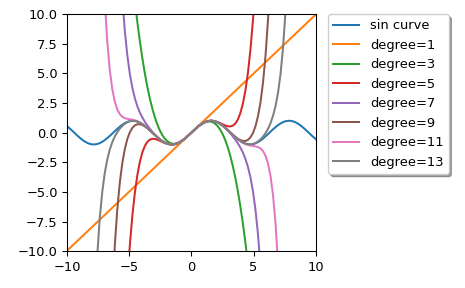

scipy.interpolate.approximate_taylor_polynomial¶
-
scipy.interpolate.approximate_taylor_polynomial(f, x, degree, scale, order=None)[source]¶ Estimate the Taylor polynomial of f at x by polynomial fitting.
- Parameters
- fcallable
The function whose Taylor polynomial is sought. Should accept a vector of x values.
- xscalar
The point at which the polynomial is to be evaluated.
- degreeint
The degree of the Taylor polynomial
- scalescalar
The width of the interval to use to evaluate the Taylor polynomial. Function values spread over a range this wide are used to fit the polynomial. Must be chosen carefully.
- orderint or None, optional
The order of the polynomial to be used in the fitting; f will be evaluated
order+1times. If None, use degree.
- Returns
- ppoly1d instance
The Taylor polynomial (translated to the origin, so that for example p(0)=f(x)).
Notes
The appropriate choice of “scale” is a trade-off; too large and the function differs from its Taylor polynomial too much to get a good answer, too small and round-off errors overwhelm the higher-order terms. The algorithm used becomes numerically unstable around order 30 even under ideal circumstances.
Choosing order somewhat larger than degree may improve the higher-order terms.
Examples
We can calculate Taylor approximation polynomials of sin function with various degrees:
>>> import matplotlib.pyplot as plt >>> from scipy.interpolate import approximate_taylor_polynomial >>> x = np.linspace(-10.0, 10.0, num=100) >>> plt.plot(x, np.sin(x), label="sin curve") >>> for degree in np.arange(1, 15, step=2): ... sin_taylor = approximate_taylor_polynomial(np.sin, 0, degree, 1, ... order=degree + 2) ... plt.plot(x, sin_taylor(x), label=f"degree={degree}") >>> plt.legend(bbox_to_anchor=(1.05, 1), loc='upper left', ... borderaxespad=0.0, shadow=True) >>> plt.tight_layout() >>> plt.axis([-10, 10, -10, 10]) >>> plt.show()
